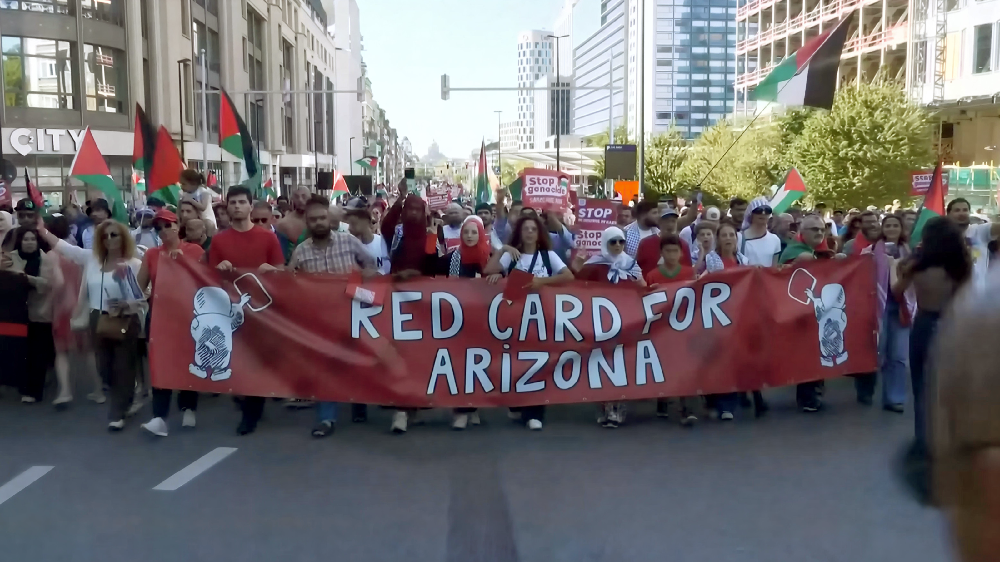
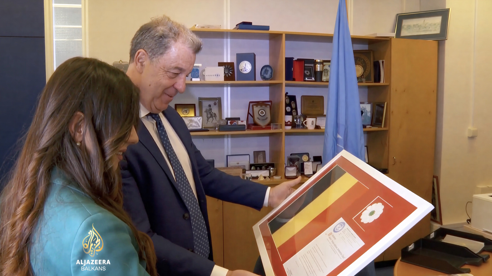
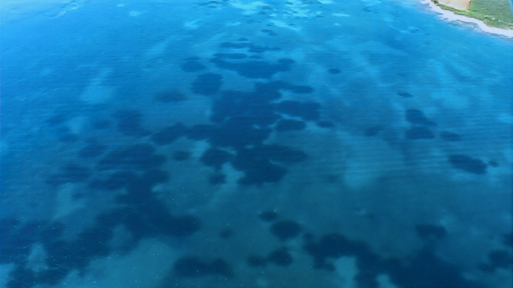
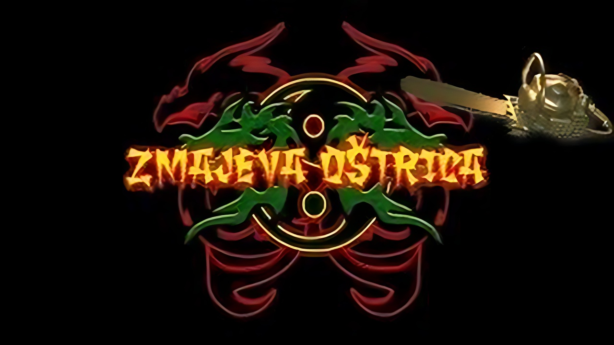
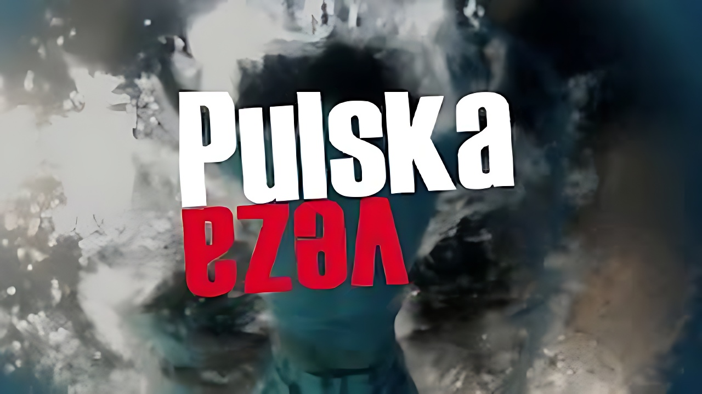
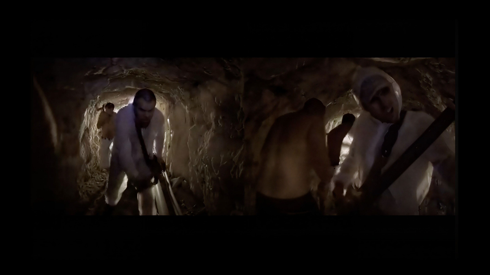
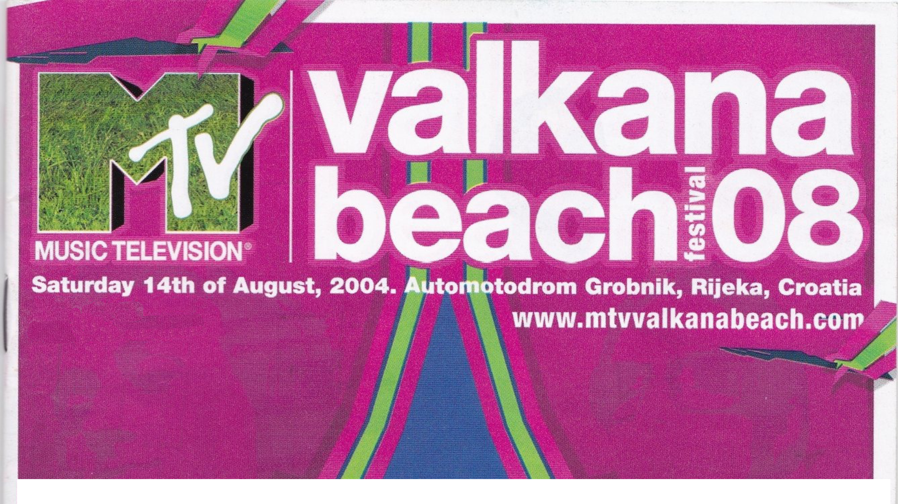

Operating every camera from
shoulder-mounted to the gimbal
For 30 years, I have been looking through a lens, capturing history as it happens — from the Balkans to Brussels. As a Field Producer and Video Journalist, I have covered high-level diplomatic meetings, international conferences and major sport events. My primary expertise is live production.
For years, I relied on the industry giants (LiveU, Aviwest, Dejero). They are great standards, but they are also rigid, expensive, and surprisingly fragile when chaos ensues. I grew tired of the "plug and pray" moments — sweating over a connection menu while the action passed by.
So, I built my own solution.
I designed a system rooted in open-source flexibility and hardened by real-world demands. I stripped away the bloated software and the overpriced hardware. I adapt on site. I don’t ask for permission from the internet.
Why share it?
I am not a corporation. I am a cameraman who solved a problem.
Reliable streaming shouldn't be the most expensive part of your production — it should be as standard and reliable as your tripod.
I offer this solution to colleagues and clients who value results over brand names.
OUT OF THE BOX.
INTO THE STREAM.
With over 30 years of experience in the broadcast industry, I bridge the gap between traditional television engineering and modern digital connectivity understanding the critical nature of live production and the complexities of delivering a pristine signal from challenging environments.

Type of work
LIVE & BREAKING NEWS
For
REUTERS
Year
2025
Covering a massive protest where 70,000 people blocked the streets — and the cell towers. Bonded system held a stable, uninterrupted stream for a solid hour. Global feed delivered without a single pixel of artifacting.
Type of work
LIVE & BREAKING NEWS
For
Al Jazeera English
Year
2021
Modern ENG requires more than just holding a camera. This project demanded a total workflow cycle in a chaotic environment: broadcasting live hits, capturing B-roll in the crowd, recording voice-overs, and editing full packages on a laptop on the sidewalk—all while maintaining the live link.

Type of work
LIVE & BREAKING NEWS
For
Al Jazeera Balkans
Year
2023
An exclusive interview recorded inside the United Nations. With only one accreditation granted, I had to be the entire crew. I orchestrated a complex 4-camera setup with professional lighting and audio, managing the technical direction alone while ensuring broadcast standards for a global audience.

Type of work
DOCUMENTARY & FILM
For
Zelena Istra
Year
1998
An underwater documentary that went beyond the screen. Not only did it win festival awards, but it also directly contributed to a change in legislation regarding marine protection. Proof that a camera can be a powerful tool for environmental change.

Type of work
DOCUMENTARY & FILM
For
Kinema
Year
2011
A genre-bending "trash" action film that achieved cult status, winning the "Golden Chainsaw" award. Featuring the legendary Rade Šerbedžija, this project proved that high entertainment value doesn't always need a high budget—just creativity and nerve.

Type of work
DOCUMENTARY & FILM
For
Kinema
Year
2012
A feature film designed to close the Pula Film Festival. As Director, Writer, and Producer, I managed a cast and crew of over 300 people. A massive logistical undertaking that united the city for a grand cinematic finale.

Type of work
COMMERCIAL & MUSIC
For
Popeye
Year
2007
Experimental playground. A blend of technical execution and creative directing that resonated with a audience.

Type of work
COMMERCIAL & MUSIC
For
MTV
Year
2004
Before YouTube, there was satellite. This commercial was broadcast across 18 satellites, reaching over 250 million viewers worldwide. There is a special kind of satisfaction in walking past a shop window in a foreign city and seeing your work playing on the screens.